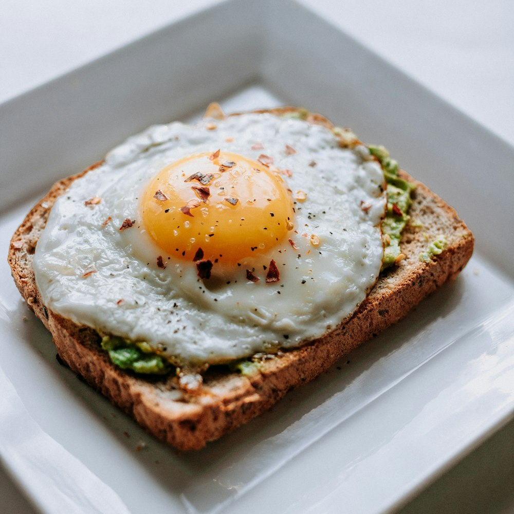

St. Louis BBQ Ribs
Pork spare ribs rubbed with brown sugar and spices, smoked slow until tender and glazed with sweet tangy BBQ sauce ($22.50).
Sunday dinner is a cherished tradition at Freshwaters. Gather around our tables for slow-simmered collard greens, four-cheese baked macaroni, tender BBQ ribs, and warm cornbread.

Slow-cooked with love and served with two sides and warm buttermilk cornbread.
Pork spare ribs rubbed with brown sugar and spices, smoked slow until tender and glazed with sweet tangy BBQ sauce ($22.50).
Center-cut pork chops seared in cast iron and braised in a savory, rich caramelized onion and bell pepper gravy ($20.50).
Fresh chicken steeped in spiced buttermilk, dredged in seasoned flour, and fried golden brown with crispy, flavorful crust ($18.50).
Prepared from scratch every day with real butter, cream, and seasonings.